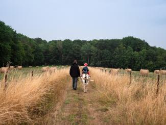
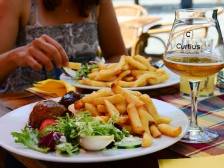
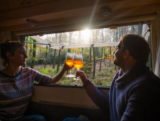
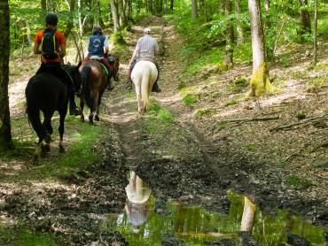
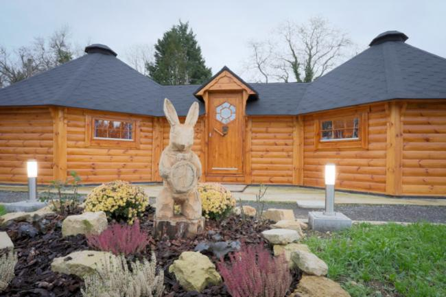

Natuur
100% in de natuur
Te voet, te paard of op de fiets — de bossen en valleien zijn het hoofdpersonage.
Ardennen · Belevenissen
Geen bezienswaardighedenlijst, maar verhalen: van een ezeltocht met de kinderen tot een nacht bivakkeren in het bos — verteld door de mensen die er wonen.
Kies je thema
Te voet, te paard of op de fiets — de bossen en valleien zijn het hoofdpersonage.

Een ezeltocht, een chocolatier, een dagje aan het water: avonturen op kindermaat.

Kajak, klimmen, mountainbike, bivak — voor wie de Ardennen liever zwetend ontdekt.

Ardense charcuterie, abdijbier en brouwerijbezoeken — de streek op je bord.

Van de Maasvallei tot de Semois: routes en plekken voor wie zijn huis meeneemt.

Te paard door Saint-Hubert of te voet langs vergeten paden — de tijd nemen als doel.
Zonder het woord te gebruiken
Je vindt op deze site geen rubriek "duurzaam toerisme". Wel: boshutten zonder stroom, wandel- en fietsknooppunten, brouwerijbezoeken en streekproducten. De duurzame keuze zit in het aanbod zelf — niet in een label ernaast.
